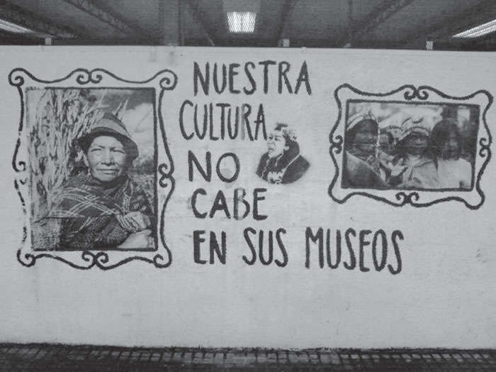
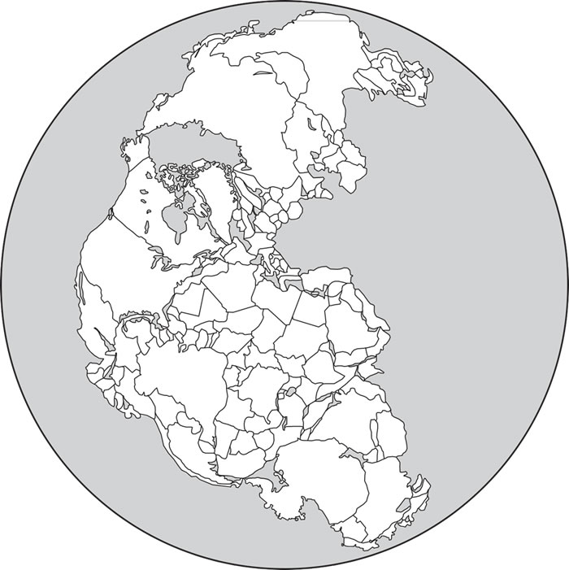

A hospitalidade pura consiste em acolher aquele que chega antes de lhe impor condições, antes de saber e indagar o que quer que seja, ainda que seja um nome ou um “documento” de identidade. Mas ela também supõe que se dirija a ele, de maneira singular, chamando-o portanto e reconhecendo-lhe um nome próprio: “Como você se chama?” A hospitalidade consiste em fazer tudo para se dirigir ao outro, em lhe conceder, até mesmo perguntar seu nome, evitando que essa pergunta se torne uma “condição”, um inquérito policial, um fichamento ou um simples controle das fronteiras. Uma arte e uma poética, mas também toda uma política dependem disso, toda uma ética se decide aí.
Associado ao contexto migratório contemporâneo, o conceito de hospitalidade proposto pelo autor impõe a necessidade de
Em sentido geral e fundamental, Direito é a técnica da coexistência humana, isto é, a técnica voltada a tornar possível a coexistência dos homens. Como técnica, o Direito se concretiza em um conjunto de regras (que, nesse caso, são leis ou normas); e tais regras têm por objeto o comportamento intersubjetivo, isto é, o comportamento recíproco dos homens entre si.
O sentido geral e fundamental do Direito, conforme foi destacado, refere-se à
O processamento da mandioca era uma atividade já realizada pelos nativos que viviam no Brasil antes da chegada de portugueses e africanos. Entretanto, ao longo do processo de colonização portuguesa, a produção de farinha foi aperfeiçoada e ampliada, tornando-se lugar-comum em todo o território da colônia portuguesa na América. Com a consolidação do comércio atlântico em suas diferentes conexões, a farinha atravessou os mares e chegou aos mercados africanos.
Considerando a formação do espaço atlântico, esse produto exemplifica historicamente a
Brasil, Alemanha, Japão e Índia pedem reforma do Conselho de Segurança
Os representantes do G4 (Brasil, Alemanha, Índia e Japão) reiteraram, em setembro de 2018, a defesa pela ampliação do Conselho de Segurança da Organização das Nações Unidas (ONU) durante reunião em Nova York (Estados Unidos). Em declaração conjunta, de dez itens, os chanceleres destacaram que o órgão, no formato em que está, com apenas cinco membros permanentes e dez rotativos, não reflete o século 21. “A reforma do Conselho de Segurança é essencial para enfrentar os desafios complexos de hoje. Como aspirantes a novos membros permanentes de um conselho reformado, os ministros reiteraram seu compromisso de trabalhar para fortalecer o funcionamento da ONU e da ordem multilateral global, bem como seu apoio às respectivas candidaturas”, afirma a declaração conjunta.
Os países mencionados no texto justificam sua pretensão com base na seguinte característica comum:
Tratava-se agora de construir um ritmo novo. Para tanto, era necessário convocar todas as forças vivas da Nação, todos os homens que, com vontade de trabalhar e confiança no futuro, pudessem erguer, num tempo novo, um novo Tempo. E, à grande convocação que conclamava o povo para a gigantesca tarefa, começaram a chegar de todos os cantos da imensa pátria os trabalhadores: os homens simples e quietos, com pés de raiz, rostos de couro e mãos de pedra, e no calcanho, em carro de boi, em lombo de burro, em paus-de-arara, por todas as formas possíveis e imagináveis, em sua mudez cheia de esperança, muitas vezes deixando para trás mulheres e filhos a aguardar suas promessas de melhores dias; foram chegando de tantos povoados, tantas cidades cujos nomes pareciam cantar saudades aos seus ouvidos, dentro dos antigos ritmos da imensa pátria... Terra de sol, Terra de luz... Brasil! Brasil! Brasília!
No texto, a narrativa produzida sobre a construção de Brasília articula os elementos políticos e socioeconômicos indicados, respectivamente, em:
Saudado por centenas de militantes de movimentos sociais de quarenta países, o papa Francisco encerrou no dia 09/07/2015 o 2º Encontro Mundial dos Movimentos Populares, em Santa Cruz de La Sierra, na Bolívia. Segundo ele, a “globalização da esperança, que nasce dos povos e cresce entre os pobres, deve substituir esta globalização da exclusão e da indiferença”.
No texto há uma crítica ao seguinte aspecto do mundo globalizado:
A Declaração Universal dos Direitos Humanos, adotada e proclamada pela Assembleia Geral da ONU na Resolução 217-A, de 10 de dezembro de 1948, foi um acontecimento histórico de grande relevância. Ao afirmar, pela primeira vez em escala planetária, o papel dos direitos humanos na convivência coletiva, pode ser considerada um evento inaugural de uma nova concepção de vida internacional.
A declaração citada no texto introduziu uma nova concepção nas relações internacionais ao possibilitar a
“Nossa cultura não cabe nos seus museus”.
Produzida no Chile, no final da década de 1970, a imagem expressa um conflito entre culturas e sua presença em museus decorrente da
A divisão política do mundo como apresentada na imagem seria possível caso o planeta fosse marcado pela estabilidade do(a)
A cidade medieval é, antes de mais nada, uma sociedade da abundância, concentrada num pequeno espaço em meio a vastas regiões pouco povoadas. Em seguida, é um lugar de produção e de trocas, onde se articulam o artesanato e o comércio, sustentados por uma economia monetária. É também o centro de um sistema de valores particular, do qual emerge a prática laboriosa e criativa do trabalho, o gosto pelo negócio e pelo dinheiro,a inclinação para o luxo, o senso da beleza. É ainda um sistema de organização de um espaço fechado com muralhas, onde se penetra por portas e se caminha por ruas e praças e que é guarnecido por torres.
No texto, o espaço descrito se caracteriza pela associação entre a ampliação das atividades urbanas e a